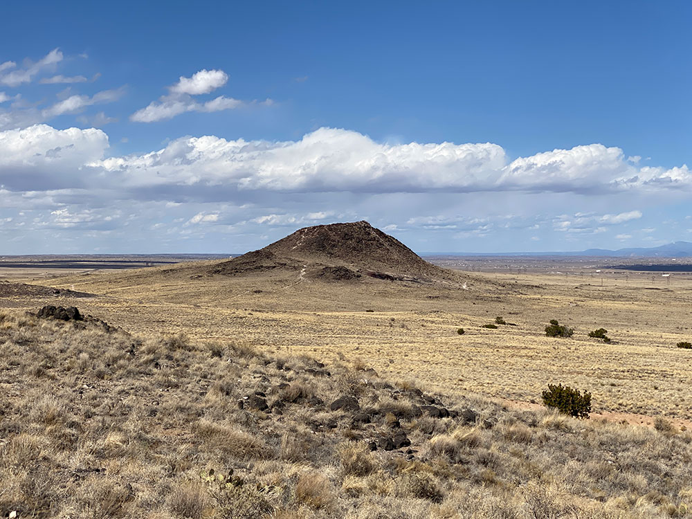
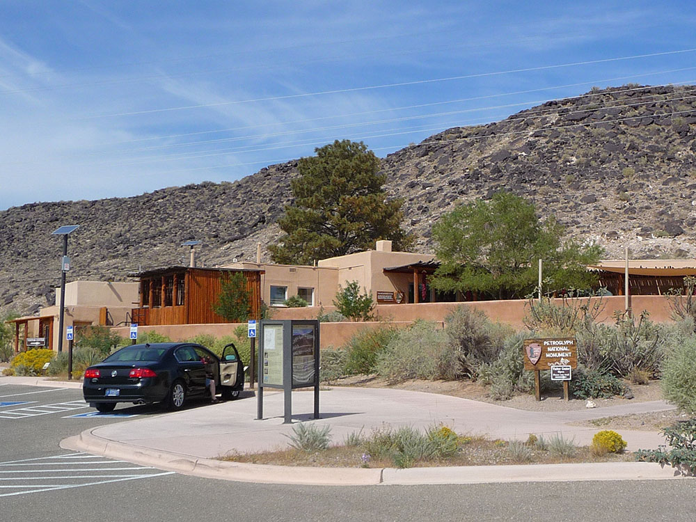
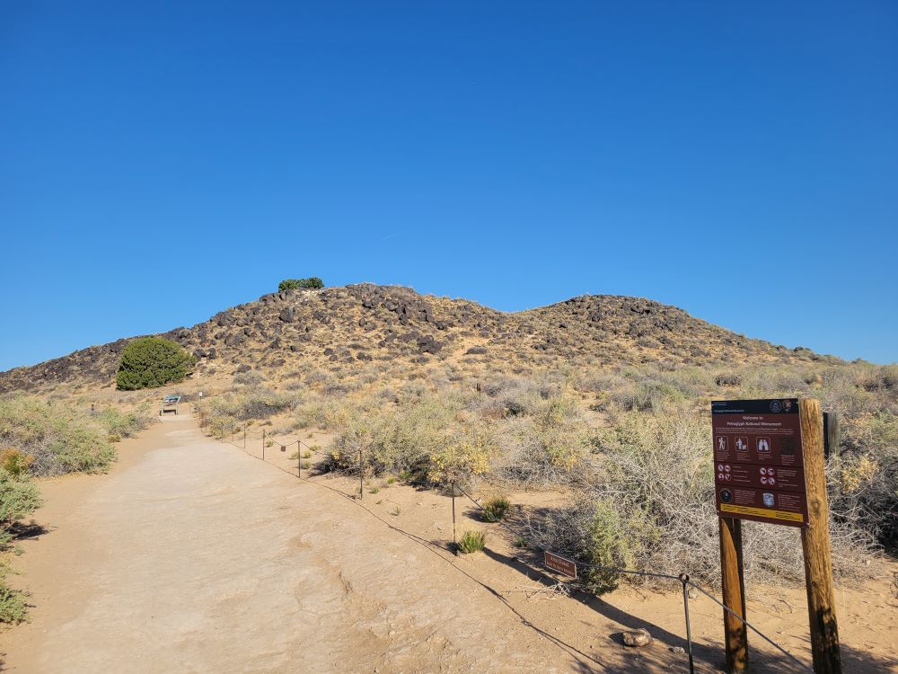
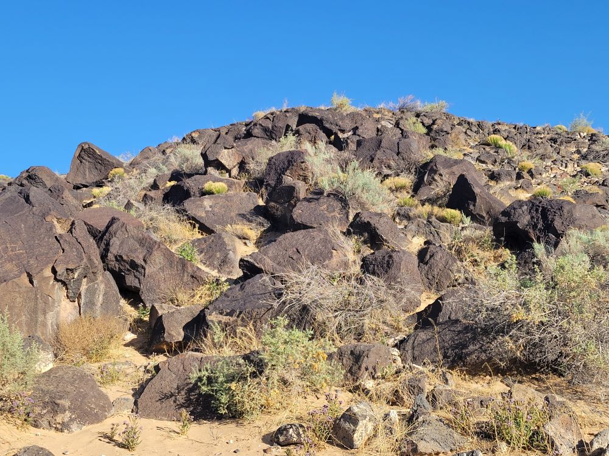
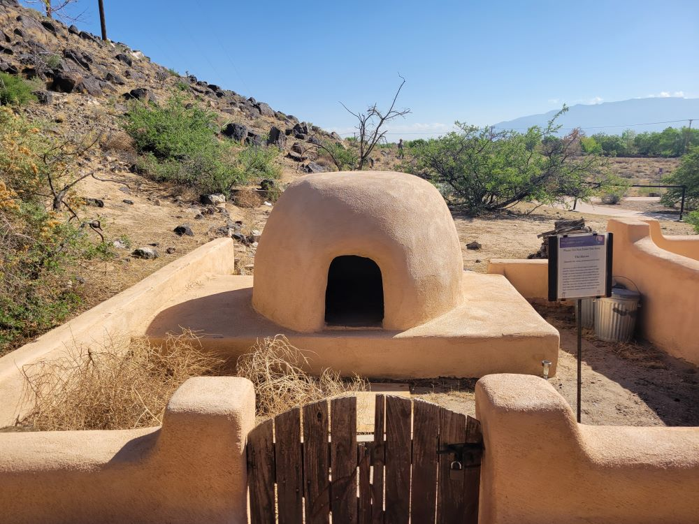
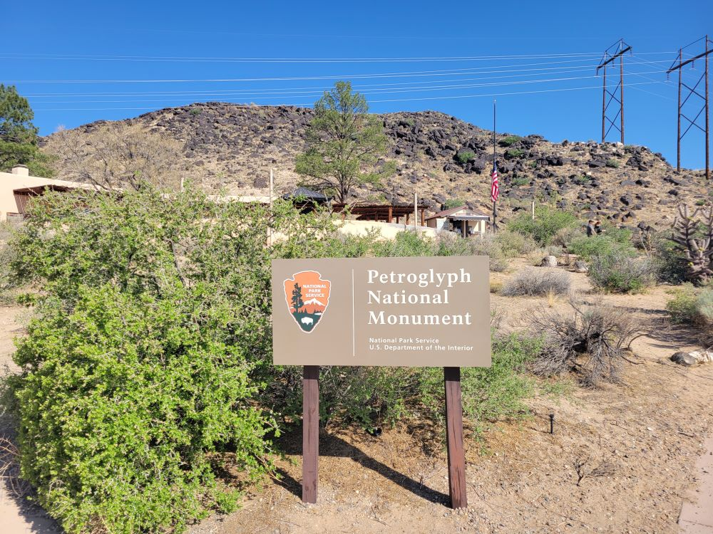
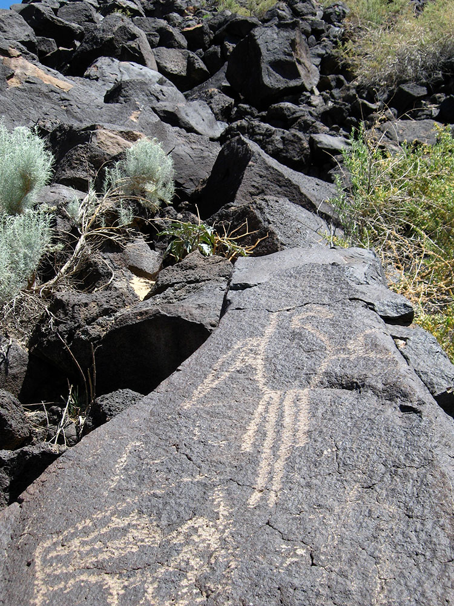
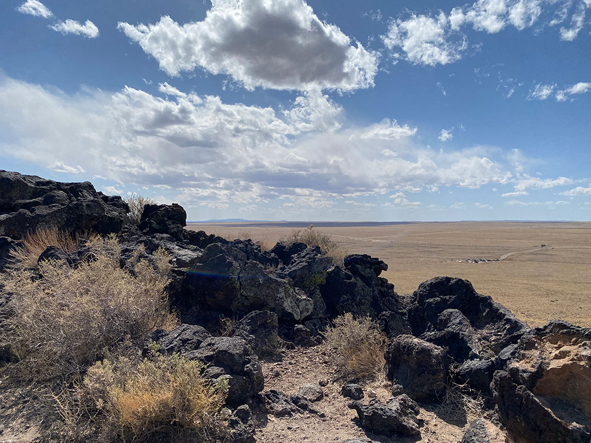

Monument protecting a variety of cultural and natural resources including five volcanic cones, hundreds of archeological sites and an estimated 24,000 images carved by Ancestral Pueblo peoples and early Spanish settlers
General Information
Open year-round
How to Get There
From Las Cruces (15 mi or less): Take University Ave or US‑70 east, then follow Dripping Springs Road or Baylor Canyon Road to access trailheads and visitor areas within the monument.
Overview
Petroglyph National Monument protects one of the largest petroglyph sites in North America along the volcanic escarpment of Albuquerque's West Mesa. The 17-mile-long basalt cliff and boulder fields hold roughly 25,000 images pecked into the rock by Ancestral Puebloan people and later Spanish settlers, depicting animals, people, spirals and spiritual symbols, with most dating from about 1300 to 1680 AD. The monument also includes five dormant volcanic cones that erupted about 150,000 years ago. Congress established it in 1990 to protect the carvings from encroaching development, and it is managed jointly by the National Park Service and the City of Albuquerque. The petroglyphs remain sacred to the Pueblo peoples of the Rio Grande valley. Visitors come to walk among the carvings, climb the volcanoes for city views and enjoy a short, free escape from the city.
Access
The monument is on the western edge of Albuquerque, about 10 to 20 minutes from downtown and Old Town, and nearly all visitors come by car. The visitor center is on Unser Boulevard NW, and the trail areas are spread along the escarpment, so most visitors drive between them: Boca Negra Canyon off Unser Boulevard, Rinconada Canyon off Unser Boulevard south of the visitor center, Piedras Marcadas Canyon in the north and the Volcanoes Day Use Area farther west. Some access roads are paved and others are well-maintained dirt roads. There is no public transportation within the monument.
Seasons
The monument is open year-round, and the cooler months from October through April are best for hiking, when temperatures are mild. Summer days can be very hot with little shade on the exposed rock, so go early in the morning, and afternoon monsoon storms can bring lightning and flash flooding. Winters are generally mild with occasional snow and cold winds. Some trailhead gates close at certain hours, and the carvings can be easiest to see in the low light of morning and late afternoon.
Things to Do
See Thousands of Ancient Petroglyphs
Petroglyph National Monument offers a chance to see rock art carved by Ancestral Puebloans and later peoples. The carvings include animals, human figures, masks, stars and geometric designs that carry cultural and spiritual meaning for Pueblo communities.
Walk Boca Negra Canyon
Boca Negra Canyon is the most accessible area, with short paved and gravel trails that lead to many petroglyphs close to the parking lot. It is popular with families and visitors on a tight schedule.
Hike Rinconada Canyon
A longer, quieter trail runs along the base of the escarpment in Rinconada Canyon, where hundreds of petroglyphs can be spotted on the lava boulders. The setting feels remote even though the city is close.
Explore Piedras Marcadas Canyon
This less developed area has one of the highest concentrations of petroglyphs in the monument and is a good option for those who want fewer crowds.
Climb the Volcanoes for City Views
The Volcanoes Day Use Area features a series of cinder cones with trails and wide views of Albuquerque, the Sandia Mountains and the Rio Grande valley. It is a favorite for sunset.
Top Trails
Rinconada Canyon Trail
Length: Approximately 2.2 miles round trip
Elevation Gain: Minimal
Difficulty: Easy
This sandy trail follows the base of the escarpment with views of many petroglyphs on the basalt boulders above. It is one of the best hikes in the monument.
Piedras Marcadas Canyon Trail
Length: Approximately 1.5 miles round trip
Elevation Gain: Minimal
Difficulty: Easy
This out-and-back trail passes several hundred petroglyphs, including some of the monument's most striking images, in a less developed canyon.
Boca Negra Canyon Trails
Length: Approximately 0.5 to 1 mile of short loops
Elevation Gain: Minimal to moderate
Difficulty: Easy
Three short trails lead to petroglyphs near the canyon floor and escarpment. The area is easy to reach and has picnic tables and restrooms.
Visitor Centers
The Petroglyph National Monument Visitor Center on Unser Boulevard NW is the best place to begin. It has exhibits on the petroglyphs, the volcanoes and the cultural significance of the area to the Pueblo people, a short film, a bookstore, restrooms and rangers who can recommend trails. It is closed on some federal holidays, and hours can vary, so check the National Park Service website. Some trailheads and day-use areas are managed by the City of Albuquerque Open Space Division and may have different hours or small parking fees.
Camping and Lodging
There is no camping or lodging in the monument. Hotels, restaurants and shops are plentiful in Albuquerque, from downtown and Old Town to the I-40 and west side corridors close to the monument. Bernalillo and Rio Rancho, about 20 to 30 minutes north, offer additional options, including casino resorts and RV parks. Camping is available at RV parks in and around Albuquerque and at campgrounds in the Sandia and Manzano Mountains, about 45 minutes away. Santa Fe is about an hour north. Check each property's website for current availability.
Geologic history
Approximately 200,000 years ago, six volcanic eruptions created a 17-mile-long (27 km) cliff containing thick basalt layers of rock and cooled lava. When the volcanoes erupted, molten lava ranging in depth from 5 to 50 feet flowed downhill using old water ways, called arroyos, which eventually formed triangular, peninsula shaped channels that flowed around hills. The hills have long since eroded away over time, while the stronger basalt rocks remained, which eventually cracked and formed canyons and escarpments. As time progressed, more eruptions occurred and thicker lava cooled to form the now-extinct volcanic cones to the west of the monument; these cones can be seen from the top of the mesa. This unique formation of the landscape is called reverse topography.
The basalt rocks' geologic nature allows for the creation of the petroglyphs, or rock carvings, on their surface. The rocks contain high concentrations of iron, manganese and calcium; this combination creates rocks of a gray-like color. However, over thousands of years of exposure to the desert's rough environment, a "desert varnish" forms on the surface. The varnish is formed from the oxidization, or rusting, of the manganese and iron when mixed with oxygen in the air and water from rain; this varnish is dark, almost-black and glossy in appearance. Long ago, Native Americans, as well as Spanish settlers discovered that images can be created on the faces of the rocks by chipping away at this layer using rocks and other tools.
Cultural history and significance
The petroglyph images within the monument hold deep cultural significance to Pueblo peoples and neighboring Native peoples. This rock art has complex and varied meanings.
Archaeologists have dated some carvings, primarily those in the Boca Negra Canyon area, as far back as 3,000 years ago. The relative age is determined based on the darkness of the image, its context, and its comparison to other works of the same age. It is estimated that about 90 percent of the petroglyphs were created during the period between AD 1300 until the end of the 17th century because of the "Southwestern Style" used. At this time, the Native population was increasing quickly and Pueblo adobe villages were being built along the Rio Grande River and at the base of the Sandia Mountains.
This article uses material from the Wikipedia article and official pages for Petroglyph National Monument, AllTrails Guide, Albuquerque Travel Guide, Western National Parks Guide, Petroglyph Travel Guide, released under the Creative Commons Attribution-Share-Alike License 3.0. Additional information from the National Park Service.
Featured Trails
#Placeholder, #License, via Wikimedia Commons; Image Size Adjusted
Boca Negra Canyon Trails
Difficulty: Easy
Short and accessible trails with dense concentrations of petroglyphs, great for quick visits and families
#Placeholder, #License, via Wikimedia Commons; Image Size Adjusted
Rinconada Canyon Loop
Difficulty: Easy
Scenic canyon loop with hundreds of petroglyphs and a quiet desert hiking experience
#Placeholder, #License, via Wikimedia Commons; Image Size Adjusted
Piedras Marcadas Canyon Trail
Difficulty: Easy
Out-and-back trail with one of the highest concentrations of petroglyphs in a natural desert setting
#Placeholder, #License, via Wikimedia Commons; Image Size Adjusted
Volcanoes Trail
Difficulty: Moderate
Loop trail around dormant volcanic cones with wide desert views and unique geological features










